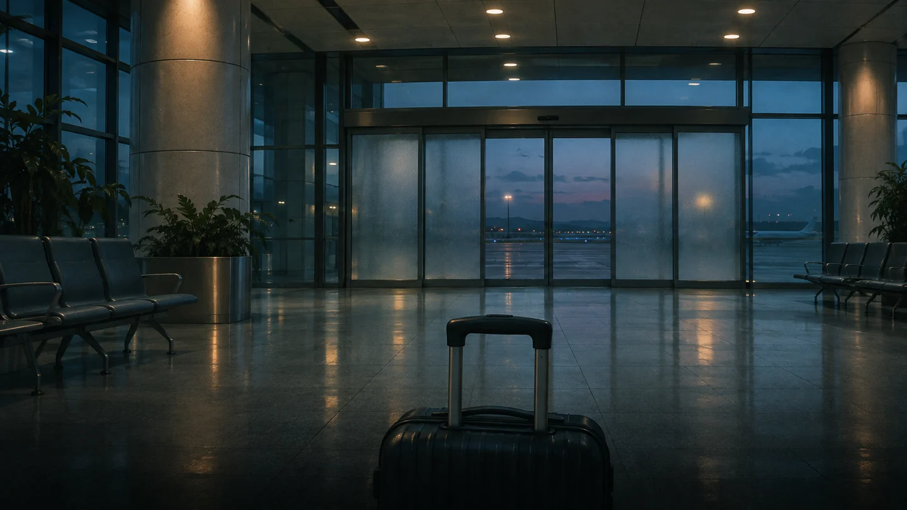
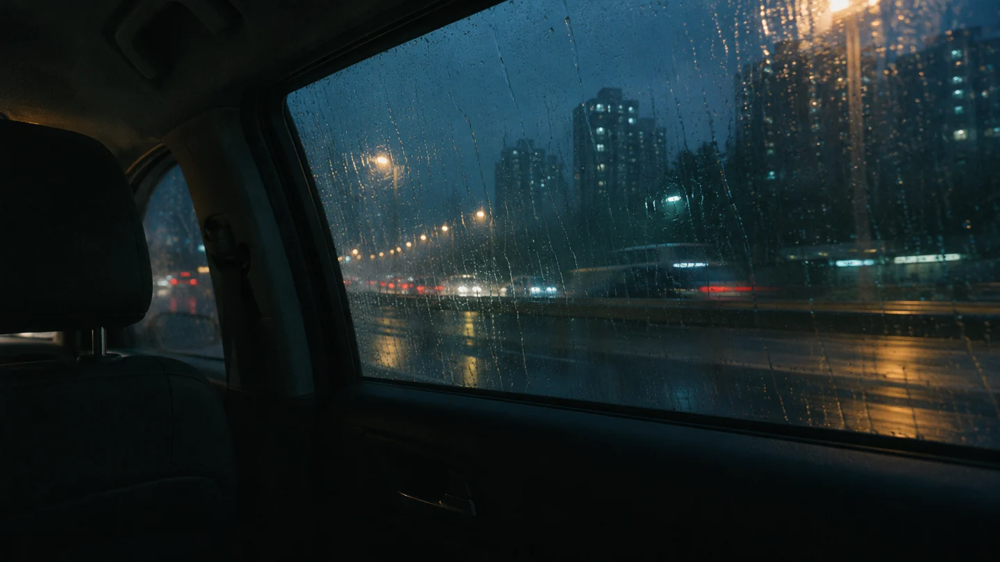
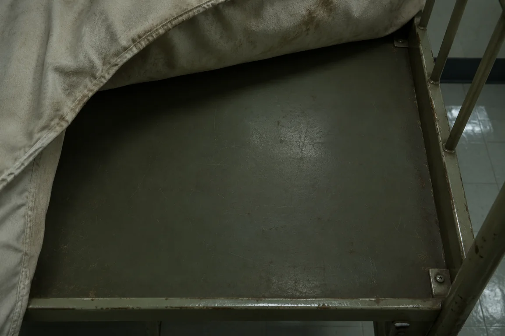

医院篇
正在加载游戏素材
暂无存档
巴赫《G 大调第一号无伴奏大提琴组曲》BWV 1007 · 前奏曲 大提琴录音 Chris（CC0）
单击地面步行，双击奔跑。WASD 或方向键移动，按住 Shift 奔跑，J 攻击，E 交互或离开藏身处，T 开关手电，I 背包，N 文档，B 背景音乐，M 地图，F 全屏。奔跑和攻击消耗体力。理智随时间下降，三楼黑暗中下降更快，归零即死亡。



◆ 你的位置■ 已到访↑↓ 楼梯
理智耗尽